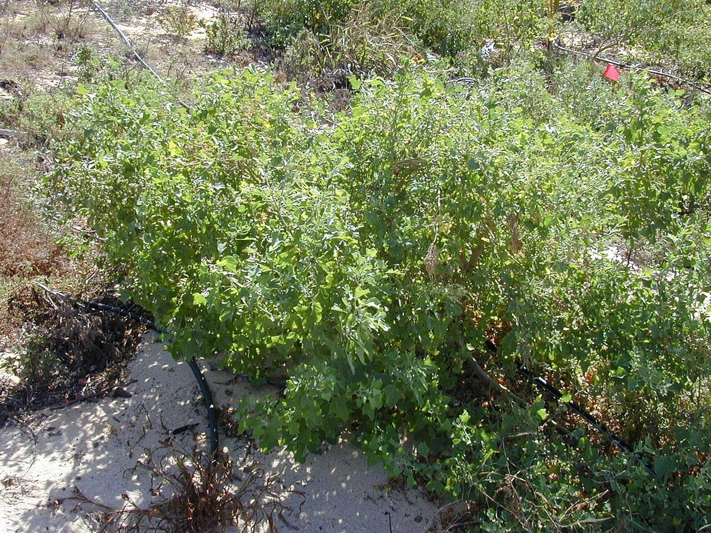
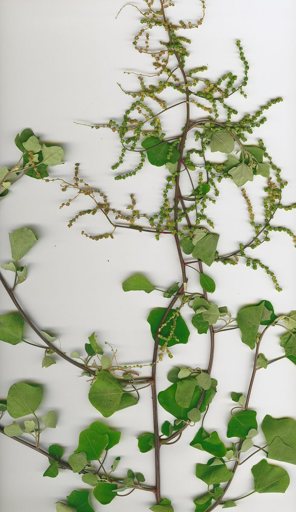
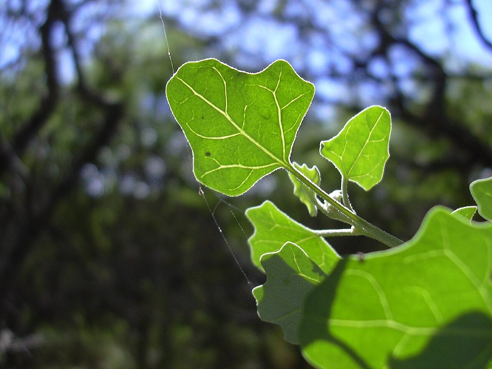

Chenopodium oahuense
ʻāweoweo, ʻāheahea, ʻāhewahewa · Hawaiian goosefoot, ʻāweoweo



Quick facts
| Family | Amaranthaceae |
|---|---|
| Scientific name | Chenopodium oahuense |
| Hawaiian name(s) | ʻāweoweo, ʻāheahea, ʻāhewahewa |
| English name(s) | Hawaiian goosefoot, ʻāweoweo |
| Status | Indigenous (native, non-endemic) |
| Conservation | — |
| Coastal zones | Beach strand Sea cliff Valley mouth |
| Occurrence | A frequent shrub of dry Kauaʻi coastal cliffs and adjacent lowland slopes. On the roadless Nāpali Coast it is one of the most conspicuous native woody plants along cliff-top rims and open valley mouths from Nuʻalolo Kai through Kalalau, and also at Māhāʻulepū on drier basaltic outcrops. |
How to identify
- Growth form
- Upright to spreading shrub 1–3 m tall, moderately branched from a woody base, often forming distinct rounded silhouettes on open cliff edges.
- Size
- 1–3 m tall; canopy 1–2 m across when mature.
- Leaves
- Fleshy, alternate, triangular to broadly rhombic with 2–4 shallow lateral lobes (goosefoot outline), grey-green above and often paler beneath. Whole plant is characteristically covered in tiny mealy / scurfy (farinose) scales that come off on your fingertips — a hand-lens confirms the powdery bladder-hairs.
- Flowers
- Tiny, green, without showy petals, densely packed in slender terminal and axillary spikes. Individually inconspicuous; the spikes themselves are the visible feature.
- Fruit / seed
- Small dry utricle enclosing a single lenticular black seed; fruit clusters persist on the spikes long after flowering.
- Bark / stem
- Woody at the base, greenish and ridged on younger shoots, becoming grey-brown and shreddy on older stems.
- Where it sits on the coast
- Dry sea-cliff tops, exposed rocky ridges just inland of the cliff edge, and dry-facing lower valley slopes. Absent from moist valley interiors.
Clinchers (features that lock the ID)
- Grey-green triangular-lobed fleshy leaves with a distinctly mealy / scurfy surface — rub a leaf and powder comes off.
- Slender green spikes of tiny apetalous flowers, unlike any conspicuous flower of the coast.
- Upright coastal shrub habit on dry Nāpali cliff-tops or rocky lowland slopes.
Look-alikes
- Myoporum sandwicense (naio) — Naio has entire lanceolate leaves without lobes and with a resinous / aromatic quality when crushed; its leaves are not mealy-scurfy. Naio flowers are small white bells, not green apetalous spikes.
- Chenopodium murale and other weedy chenopods (introduced) — Weedy chenopods on Hawaiian coasts are typically herbaceous, thin- stemmed, and much less scurfy; leaves are green rather than grey- green and lack the fleshy quality of native ʻāweoweo.
Ecology
Halophyte tolerant of salt spray, drought, and thin soils; frequently found rooted directly in fractured basalt or coral rubble. An important larval host for native Hawaiian Lepidoptera. Its dense, moderately woody crowns provide microhabitat for native invertebrates on otherwise bare cliff-top substrate. [16], [21], [22], [25], [27], [29]
Cultural significance
ʻĀweoweo shares its name with the reef fish of the same name; the correspondence between plant and fish names in Hawaiian ethnobotany is itself a documented tradition. Leaves were historically eaten in Hawaiian cuisine. Cultural preparation is not detailed here and belongs to Hawaiian food-culture practitioners.